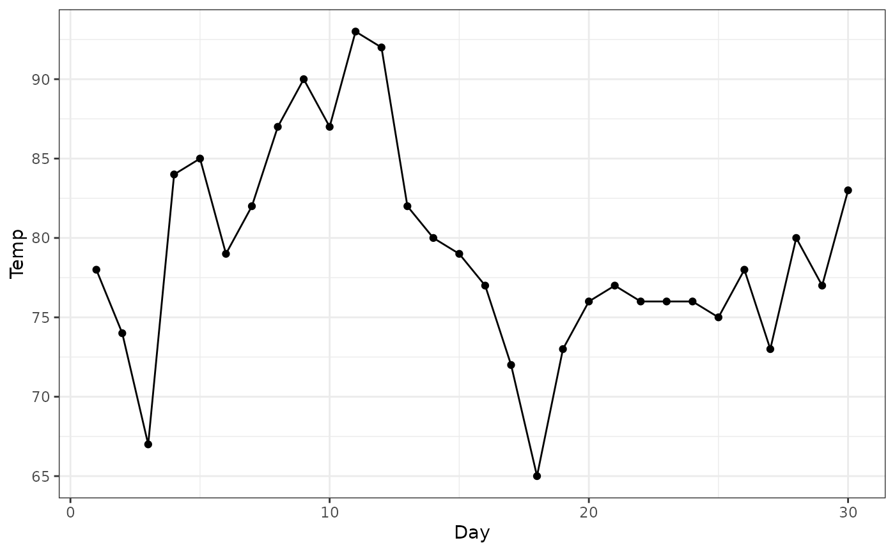
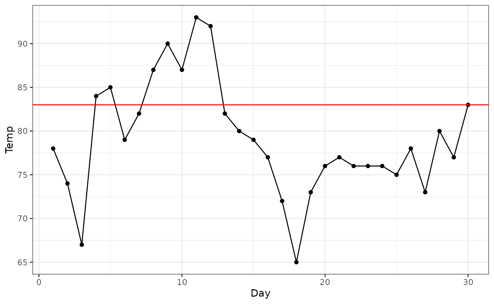
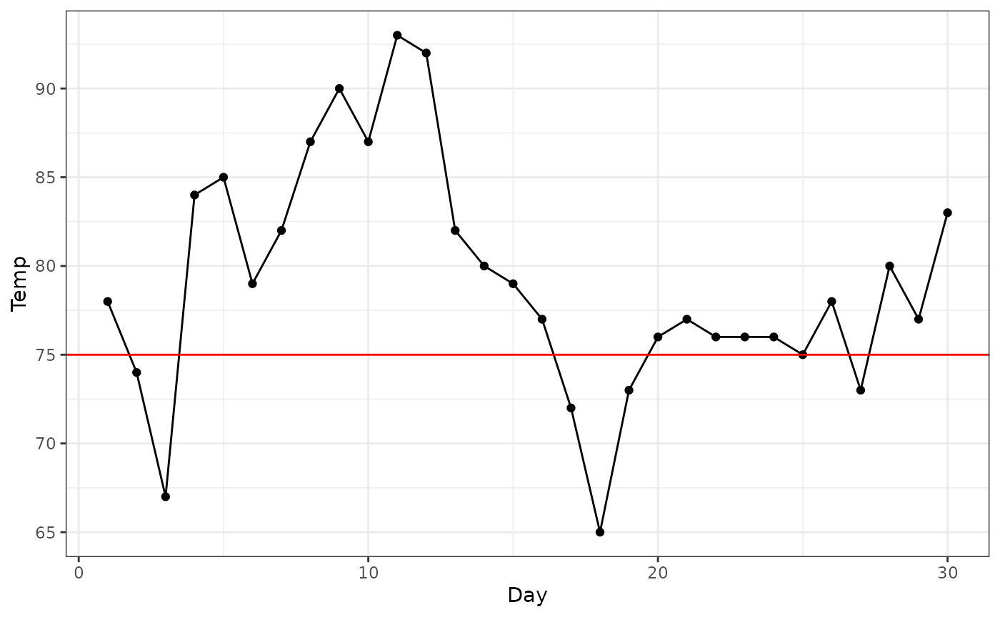
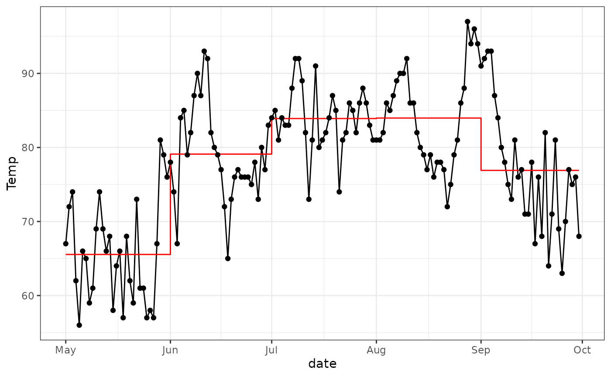

The runner package helps to count and compute statistics
of events that occur in sequences that meet some conditions.
As an example, let’s use the airquality dataset. It
contains daily air quality measurements in New York, from May to
September 1973.
library(runner)
data("airquality")
head(airquality)
#> Ozone Solar.R Wind Temp Month Day
#> 1 41 190 7.4 67 5 1
#> 2 36 118 8.0 72 5 2
#> 3 12 149 12.6 74 5 3
#> 4 18 313 11.5 62 5 4
#> 5 NA NA 14.3 56 5 5
#> 6 28 NA 14.9 66 5 6Examples
First, let’s consider the temperature measurements taken in June.
june_data <- subset(airquality, Month == 6)
library(ggplot2)
ggplot(june_data, aes(x = Day, y = Temp)) +
geom_line() +
geom_point() +
theme_bw()
How many times we had three days or more in a row, with temperatures above 83F?
To answer this question, first look at the plot.
ggplot(june_data, aes(x = Day, y = Temp)) +
geom_line() +
geom_point() +
geom_hline(yintercept = 83, color = "red") +
theme_bw()
There are two sequences of days with temperatures above 83F. One with two days, and one with 5 days. This last sequence meets the condition of “three days or more”.
Now, let’s use the runner package to compute this for
us.
trle_cond(june_data$Temp, a_op = "gte", a = 3, b_op = "gte", b = 83)
#> [1] 1How many times we had two days or more with temperatures below 75F?
ggplot(june_data, aes(x = Day, y = Temp)) +
geom_line() +
geom_point() +
geom_hline(yintercept = 75, color = "red") +
theme_bw()
trle_cond(june_data$Temp, a_op = "gte", a = 2, b_op = "lte", b = 75)
#> [1] 2Grouping
You can use the runner functions inside
?dplyr::summarise to compute counts for groups.
For each month, how many sequences of three days or more presented temperatures above the month’s average.
library(dplyr)
airquality |>
summarise(
avg = mean(Temp, na.rm = TRUE),
count_3 = trle_cond(Temp, a_op = "gte", a = 3, b_op = "gte", b = avg),
.by = Month
)
#> Month avg count_3
#> 1 5 65.54839 3
#> 2 6 79.10000 1
#> 3 7 83.90323 3
#> 4 8 83.96774 2
#> 5 9 76.90000 1
month_avg <- airquality |>
summarise(
avg = mean(Temp, na.rm = TRUE),
.by = Month
)
airquality |>
left_join(month_avg, by = "Month") |>
mutate(date = as.Date(paste0(1973,"-",Month,"-",Day))) |>
ggplot(aes(x = date)) +
geom_line(aes(y = Temp)) +
geom_step(aes(y = avg), color = "red") +
geom_point(aes(y = Temp)) +
theme_bw()